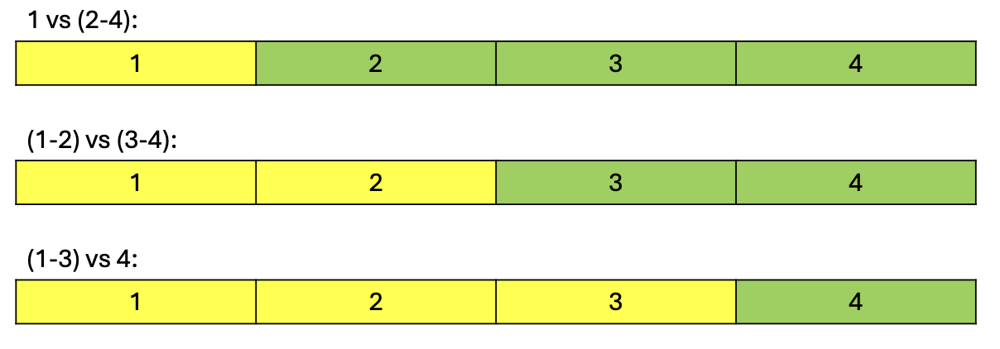
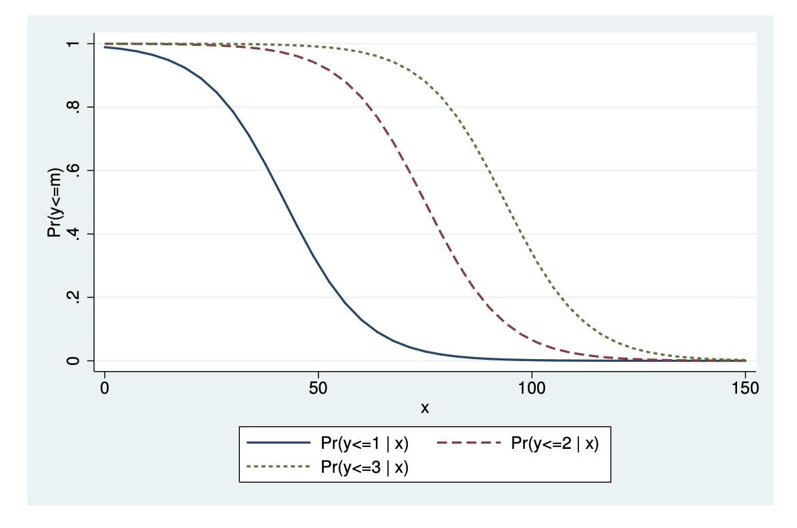

This lesson requires a strong understanding of the logistic regression model, as discussed in lesson 1.8.
1.9.1: Motivation - Polytomous Outcomes
Up to this point in the course, we have covered two main types of regression:
- Linear regression: which is primarily used for continuous outcome variables (although sometimes binary outcome variables can also be used, and ordinal variables can be used if you “pretend” they are continuous.).
- Logistic regression: which is used for binary outcome variables.
You will notice that neither of these two models deal with categorical variables (or ordinal variables if you do not want to pretend they are continuous).
This is an issue - because often times, we do want to explore outcomes with categorical variables:
- How likely is a voter to support a specific party in a multi-party system?
- How likely is a voter likely to choose a product out of a set of multiple products?
- How likely is an individual to associate with a specific personality category?
These are all outcome variables that are categorical (see 1.6.1 for a more formal definition of categorical variables).
As we covered in 1.6.1, there are two different “types” of categorical variables:
- The “normal” categorical variables, where the categories have no natural order.
- Ordinal variables, which are categorical variables where the categories have a natural order.
In this lesson, we will introduce models to deal with both types of variables.
- Note: Ordinal variables can also be modelled as a categorical variable, however, a categorical variable cannot be modelled as ordinal.
Now, let us more formally define our categorical outcome variables.
Suppose you have some outcome variable y, that has c number of categories. We can label the categories as 1, 2, \dots, c.
- A binary outcome variable (that we used in logistic regression) is a special case where c=2.
Let us define j as any category 1, 2, \dots, c. The parameters we are interested in are the probabilities of being in each category.
\pi_j = Pr(y = j) \quad \text{for} j=1,\dots, c
- Essentially, we are interested in how likely an observation is to be in category 1, category 2, and so on, until category c.
The probabilities of being in each category, all summed together, should equal 1, since by the rules of probability, all possible events sum to a probability of 1:
\sum\limits_{j=1}^c \pi_j = 1
This property means that if we know the probabilities of all categories from 1 to c-1, then we can find the probability of category c by the complement:
\pi_c = 1 - \sum\limits_{j=1}^{c-1}\pi_j
All these properties hold for both ordinal and categorical outcome variables. The difference is that for categorical variables, the labelling of categories j = 1, \dots, c is arbitrary - i.e., we can call any category category 1, any other category category 2, and so on.
For ordinal variables, the labelling of the categories j= 1, \dots, c has meaning - category 1 must be category 1, and category 2 must be category 2.
1.9.2: The Ordinal Logistic Model
The ordinal logistic model is actually a set of c-1 binary logistic regressions, where c is the total number of categories.
The set of c-1 binary logistic regression are the following (let us use c=4 as an example):
- Category 1 vs. category 2-4 (predicts the probability of unit i being in category 1, vs. category 2-4).
- Category 1-2 vs. Category 3-4 (predicts the probability of unit i being in category 1-2, vs. category 3-4).
- Category 1-3 vs. Category 4 (predicts the probability of unit i being in category 1-3, vs. category 4).
The figure below shows this more intuitively (the yellow is the probability that our logistic regression is predicting for):

We can see that these set of c-1 logistic regression models are predicting cumulative probabilities. Cumulative probabilities \gamma_j are the probability of anything equal or below to a certain outcome value occurring.
- The first model measures the cumulative probability of outcome 1 or below, \gamma_1. (so just category 1).
- The second model measures the cumulative probability of outcome 2 or below, \gamma_2. (so both category 1 and 2).
- The third model measures the cumulative probability of outcome 3 or below, \gamma_3. (so categories 1, 2, and 3).
We can define the cumulative probability as the value \gamma_j:
\gamma_j = Pr(y≤ j) = \pi_1 + \dots +\pi_j
- So \gamma_j is just the sum of probabilities of categories 1, \dots, j.
The ordinal logistic regression model is a model for these cumulative probabilities \gamma_j:
The ordinal logistic model is a set of c-1 binary logistic models, where the outcome of interest is the cumulative probabilities \gamma_j = Pr(y ≤ j):
\gamma_j = Pr(y≤ j) = \frac{e^{\beta_{0j} - (\beta_1x_1 + \dots + \beta_k x_k)}}{1+e^{\beta_{0j} - (\beta_1x_1 + \dots + \beta_k x_k)}}
The intercept term \beta_{0j} is dependent on j (so dependent on which one of the c-1 binary logistic models). The following about the intercept should be true: \beta_{01} ≤ \beta_{02} ≤ \dots ≤ \beta_{0c-1}.
- This is because cumulative probabilities (adding probability of everything below) will never decrease when j (the outcome value of interest) increases, since probabilities must be greater than 0, so adding another category’s probability cannot result in a decrease in cumulative probability.
The coefficients \beta_1, \dots, \beta_j are the same for all c-1 binary logistic models.
Just like binary logistic regression, the ordinal model can also be written in terms of log-odds (of the cumulative probabilities):
\log\left( \frac{\gamma_j}{1-\gamma_j}\right) = \beta_{0j} + \beta_1x_1 + \dots + \beta_kx_k
As mentioned above, The coefficients \beta_1, \dots, \beta_j are the same for all c-1 binary logistic models, and only \beta_{0j} varies between the c-1 binary logistic models.
What that means is that each c-1 binary logistic regression curves are “parallel”, since they have the same coefficients, and different intercepts. The figure below shows an example where \gamma_1, \gamma_2, \gamma_3 are parallel (in a outcome variable with c=4 categories):

The fact that \beta_1, \dots, \beta_k are the same across all c-1 binary logistic regressions is a big assumption (known as the proportional odds assumption). This restricts the flexibility of the model, since all binary logistic regressions must have the same coefficient values. This will be relaxed in the following multinomial logistic regression.
Now that we know how the model is set up, let us interpret the model in two different ways in the next two sections:
- The coefficients of the model, and what they tell us about the relationship between x and y.
- The fitted probabilities of the model, and how we can use them for prediction and classification.
1.9.3: Coefficients of the Ordinal Model
We have the ordinal logistic regression model. By estimating the parameters \beta_{0j}, \beta_1, \dots, \beta_k using maximum likelihood estimation (quite advanced, see lesson 2.6), we can obtain the estimates of \hat\beta_{0j}, \hat\beta_1, \dots, \hat\beta_k.
The coefficients \hat\beta_1, \dots, \hat\beta_k are interpreted in a very similar way to binary logistic regression. The sign of the coefficient tells us the direction of the relationship, and a coefficient value of 0 means no relationship.
We can also use odds ratios in the same way to interpret the coefficient’s magnitudes (see 1.8.4): An increase in one unit of x increases the odds of a unit being in a higher category of y by a multiplicative increase of e^{\hat\beta_1}.
- So, if e^{\hat\beta_1}>1 (or any \hat\beta_1, \dots, \hat\beta_k), then a one unit increase in x increases the odds of being in a higher category of y by (e^{\hat\beta_1} -1) \times 100 percent.
- If e^{\hat\beta_1}<1 (or any \hat\beta_1, \dots, \hat\beta_k), then a one unit increase in x decreases the odds of being in a higher category of y by (1-e^{\hat\beta_1}) \times 100 percent.
- if e^{\hat\beta_1=1} (or any \hat\beta_1, \dots, \hat\beta_k), then a one unit increase in x does not affect the odds of being in a higher category of y.
We can also use the same statistical tests as in logistic regression to test the significance of the coefficients.
Our 95% confidence intervals of our coefficients (just as in 1.8.5) are:
\hat\beta_1 - 1.96 \widehat{se}(\hat\beta_1), \ \hat\beta_1 + 1.96 \widehat{se}(\hat\beta_1)
- Applies to any \hat\beta_1, \dots, \hat\beta_k.
And for our odds ratios, the 95% confidence interval is (just as in 1.8.5):
e^{\hat\beta_1 - 1.96 \widehat{se}(\hat\beta_1)}, \ e{\hat\beta_1 + 1.96 \widehat{se}(\hat\beta_1)}
We can run hypothesis testing to see if the relationship between x and y is statistically significant. Our hypotheses are:
\begin{split} H_0: \beta_1 = 0 \\ H_1:\beta_1 ≠ 0 \end{split}
We use z-test statistic or wald-test statistic (just like in 1.8.5):
z = \frac{\hat\beta_1 - 0}{\widehat{se}(\hat\beta_1)} \quad W = \left( \frac{\hat\beta_1 - 0}{\widehat{se}(\hat\beta_1)} \right)^2
And consult the relevant distributions: a standard normal distribution for a z-test statistic, and a \chi^2 distribution with 1 degree of freedom for the Wald test statistic. After obtaining our p-values, we can interpret the coefficients:
The p-value is the probability of getting a test statistic equally or more extreme than the one we got with our own sample estimate \hat\beta_1, given the null hypothesis is true.
- If p< 0.05, we believe the probability of the null hypothesis being true is low enough, such that we reject the null hypothesis (that there is no relationship between x and y), and conclude our alternate hypothesis (that there is a relationship between x and y.
- If p>0.05, we cannot reject the null hypothesis, and cannot reject that there is no relationship between x and y.
Note how I have been using the word relationship, not causal effect.
Causality is not established through estimators, it is established through a strong experimental design (which we will cover in part II of the course).
We can also use the likelihood ratio test to test multiple coefficients at once, with the exact same procedure as described in 1.8.6.
1.9.4: Prediction and Classification with the Ordinal Model
We described the logistic regression model as a model for the cumulative probabilities \gamma_j. However, often times, we do not care about the cumulative probabilities, but the actual probabilities of each category:
- For example, we might not care about the probability of an observation being in a category equal or less than 3 (categories 1, 2, or 3). We might care about the probability of an observation being in category 3 specifically.
Luckily, with rules of probability, we can quickly calculate the probabilities of each category 1, \dots, c from the ordinal logistic regression model.
For the first category j=1, the cumulative probability is equal to the cumulative probability (since there are no categories prior to category 1):
Pr(y =1) = \gamma_1 = \frac{e^{\beta_{01} - (\beta_1x_1 + \dots + \beta_k x_k)}}{1+e^{\beta_{01} - (\beta_1x_1 + \dots + \beta_k x_k)}}
For any category j from 2, \dots, c-1 (so not the first or last category), the actual probability of the category j is simply that categories cumulative probability \gamma_j, minus the cumulative probability of the category before it, j-1.
Pr(y=j) = \gamma_j - \gamma_{j-1}